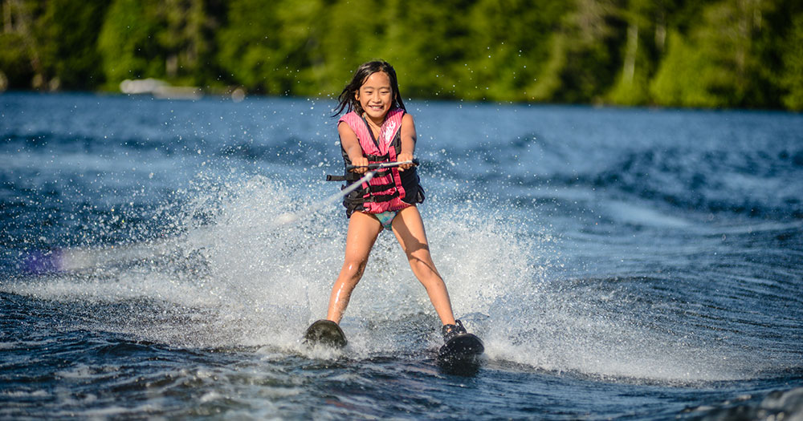

Waterskiing
Water skiing was added as an Olympic sport in 1972, drawing even more recognition and authenticity to it.
Waterskiing can be performed using 1 or 2 skis and you are towed behind the boat at about 75 feet. Water skiing reuires upper and lower body strength and good balance and endurance.
The boat should go about 20-30 Miles Per Hour when towing a waterskier.
Waterskiing is a relatively easier water sport and can easily be picked up by any age with some time.
Once mastering waterskiing on skis, barefoot can be tried out but is much more difficult.
Waterskiing for beginners
